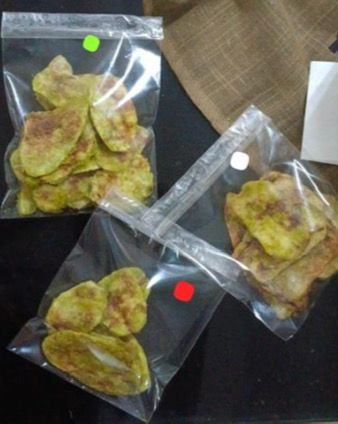

Bienvenidos a Green Habit
Deliciosos y saludables snacks que cuidan de ti.
¿Quiénes somos?
Un grupo de personas apasionadas por los snacks saludables.
Equipo
Somos un equipo de personas dedicadas a promover hábitos saludables a través de nuestros productos.
Misión
Proveer productos saludables que permitan a nuestros clientes disfrutar de opciones deliciosas sin comprometer su salud.
Visión
Ser una empresa reconocida a nivel nacional por nuestra calidad de productos saludables e innovadores en el mercado, promoviendo el respeto en el ambiente laboral al ser un lugar sano donde se promueva la creatividad, donde se gratifiquen las ideas y el esfuerzo de los trabajadores. Cumpliendo con la satisfacción del cliente al contar con un servicio y productos que cumplen con los estándares saludables, haciendo de un snack rico en sabor y beneficioso para la salud.
Valores
- Responsabilidad Social: Un impacto positivo en la comunidad.
- Integridad: Actuamos con honestidad, ante todo.
- Respeto: Valoramos a cada persona.
- Honestidad y Transparencia: Creemos que la transparencia en nuestras prácticas comerciales es fundamental. Compartimos abiertamente información sobre nuestros productos y procesos, para que nuestros clientes puedan tomar decisiones informadas.
- Amabilidad: Para crear un ambiente positivo.
Nuestros Productos
Deliciosos snacks saludables ideales para cuidar tu salud.
Propuesta de valor
Snacks que cautivan, raíces que nutren.
Producto o servicio que satisface
Ofrecemos un snack que satisface la ansiedad por comer comida chatarra, dando a nuestros clientes la opción de elegir snacks que cuidan de su salud.
Beneficios
- Ricos en nutrientes.
- Auténticos y tradicionales.
- Fáciles de consumir y llevar en cualquier momento.
Molestias que alivia
Si buscas una opción de snacks no procesados, saludables y deliciosos a la vez, nosotros somos la solución.
Precios
$15 pesos cada bolsita de Sabritas
Promociones
Verano (junio/agosto): 2x25 + salsa de la casa totalmente gratis.
¿Cómo puedes adquirir nuestros productos?
Opciones de compra
- Compras en línea por nuestra página web y redes sociales.
- Compras con nuestros distribuidores.
Sugerencias de mejora y devoluciones
Comunícate al número: 6442017126 o directamente con tu distribuidor.